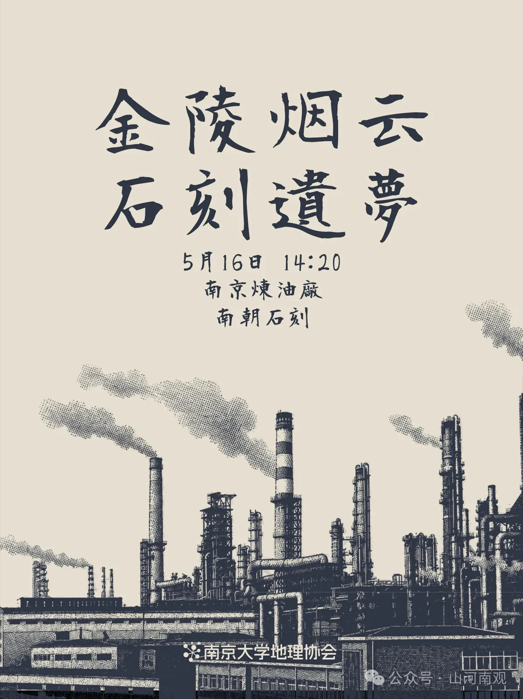

返回全部活动
已结束 · 协会活动
漫步 | 工业烟云 六朝遗梦
活动日期

南京炼油厂的温厚，藏在具体事物里：
一扇旧门、一段围墙、一只菜篮、一阵车铃，一条上班路、一片公园绿……
宏大的工业年代，落入人的生活之后，便成为清晨、午后、黄昏，成为可步行、可停留、可想象的生活半径。
厂区的回声仍在，社区的日常已经展开，单位的旧影仍在，新的邻里秩序正在生长。在南炼的生活记忆继续向今天延伸的同时，南朝旧梦又在甘家巷向时间深处漫溯。
📅 集合时间：5月16日 下午2:30
📍 集合地点：南京炼油厂（公交站）
🗺️ 活动路线：
（1）南京炼油厂公交站集合
（2）穿过尧栖线甘家巷铁路道口
（3）沿七号路到达南炼公园
（4）经七号路、纬一路、经一路、经二路到达南炼集贸市场
（5）西行探访萧融墓神道石刻
（6）沿七号路返回，需提前离开的同学可在南京炼油厂公交站返程
（7）其余同学继续沿甘家巷考察萧秀、萧恢、萧憺等南朝神道石刻
（8）返回甘家巷路公交站，乘坐300路或324路前往十月村路萧景墓神道石刻，活动结束
📝 报名须知：
本次活动限南京大学师生参与。
加入南京大学地理协会QQ群：720915627，了解更多活动信息。